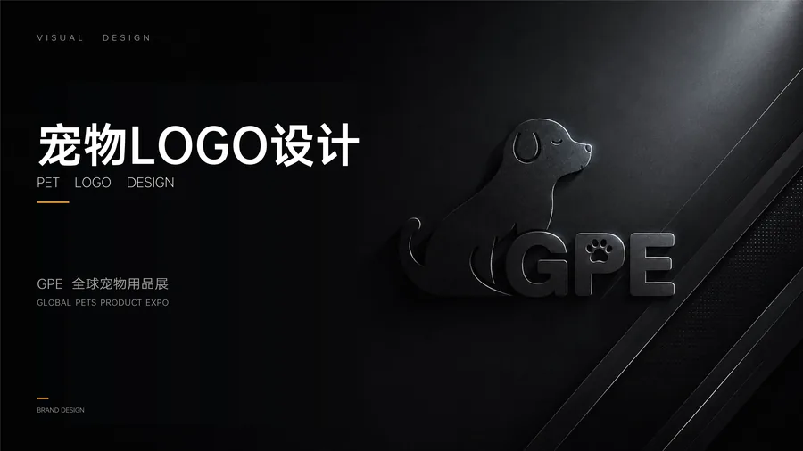
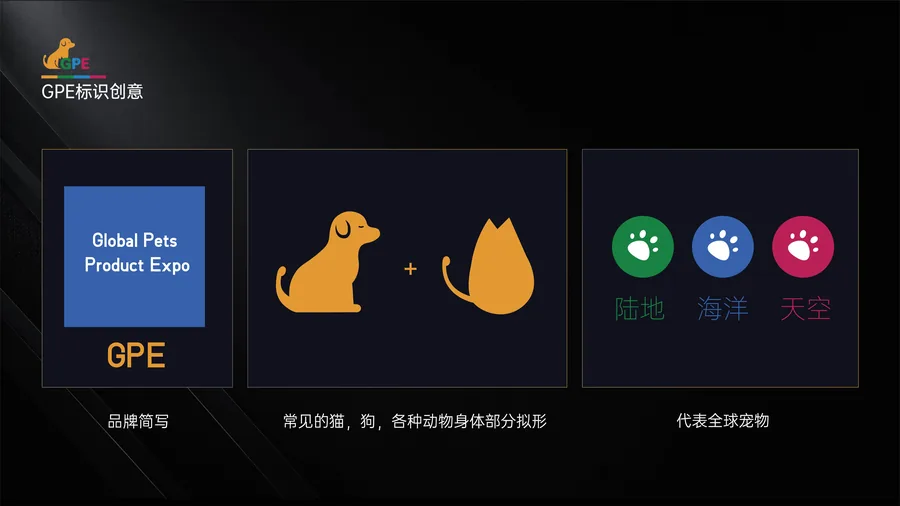
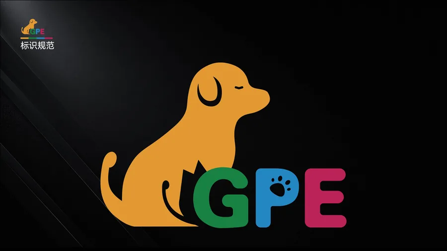
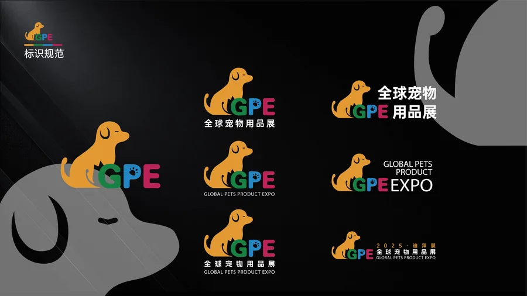
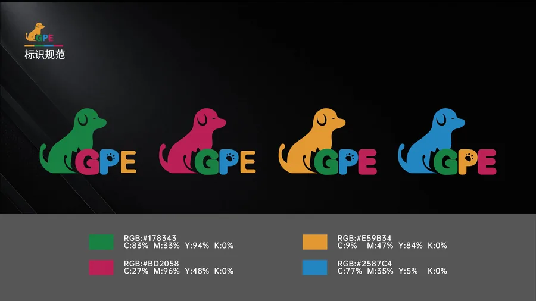

GPE = Global Pets Product Expo。设计概念融合「陆地 + 海洋 + 天空」三大元素，通过常见的猫、狗等动物身体部分拟形，构成品牌简写 GPE。陆地上的脚印、海洋的波浪、天空的翅膀，三者结合代表全球宠物的包容性与多元化。
主色：森林绿 #178343（代表自然与生命）、金色 #E59B34（代表品质与温暖）、玫红 #BD2058（代表活力与爱）、天蓝 #2587C4（代表信任与广阔）。四色搭配既体现了宠物行业的亲和力，又具有品牌的专业识别度。
完成了完整的标识规范体系，包括：标准标识组合、中英文搭配规范、色彩标准值（RGB/CMYK）、最小使用尺寸限制、安全空间规范、以及不同背景下的标识应用示例，确保品牌在全球范围内的统一应用。




